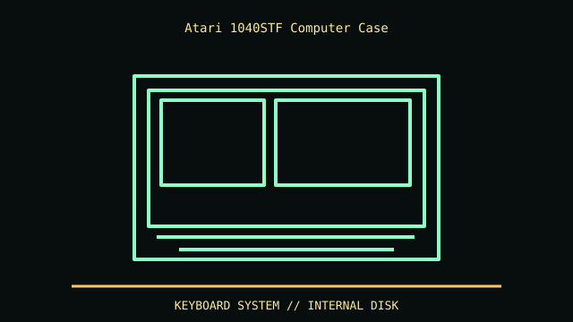

[ IDENTIFIED ENCLOSURE // ATARI 1040STF, INTEGRATED FLOPPY MODEL ]
Atari 1040STF Computer Case
Approximately 401 × 350 × 80 mm (W × D × H) in published system references; keyboard and computer share one low-profile shell. Verify regional PSU footprint and feet on actual unit.

REVISION / FIT CAVEAT: STF denotes built-in floppy; STFM adds RF modulator, while ST without F needs external disk. 1040STe has different motherboard and case features. Inspect model badge, RF ports and board revision.
Model-specific mechanical record
| Catalog leaf | Vintage desktop and integrated computer systems |
|---|---|
| Identity / generation | Atari 1040STF, integrated floppy model |
| Dimensions / clearance | Approximately 401 × 350 × 80 mm (W × D × H) in published system references; keyboard and computer share one low-profile shell. Verify regional PSU footprint and feet on actual unit. |
| Drive bays / mounts | Internal 3.5-inch double-sided floppy drive in the STF configuration; no internal PC-style expansion cage or 5.25-inch bay. |
| Board / chassis compatibility | Proprietary Atari ST motherboard and internal PSU; two expansion/joystick ports and external ACSI/MIDI/monitor interfaces do not imply PC-card compatibility. |
| Revision identification | STF denotes built-in floppy; STFM adds RF modulator, while ST without F needs external disk. 1040STe has different motherboard and case features. Inspect model badge, RF ports and board revision. |
Compatibility and preservation
Proprietary Atari ST motherboard and internal PSU; two expansion/joystick ports and external ACSI/MIDI/monitor interfaces do not imply PC-card compatibility.
Keep the internal floppy mounting rails and keyboard ribbon undamaged. Internal PSU is mains-connected; service it using the appropriate 520ST/1040ST manual, not a PC ATX replacement.
Before transfer or restoration, photograph the complete model label, assembly/board revisions, bay/backplane identifiers and included accessories. Measure the actual specimen when planning installation or shipping; nominal envelope figures may exclude protruding feet, rails, doors or cables.
Manufacturer manuals and archival sources
- Atari 520ST/1040ST Service Manual — Internet ArchiveModel-specific manufacturer specification, service manual, or technical reference used for the listed dimensions and mechanical configuration.
- Computing History — Atari 1040STF model recordSupplemental model documentation or institutional/technical archival record; use the exact product code and manual revision for a specimen.
Listings distinguish base configuration from optional drive, PSU, fan, rack and accessory kits. Do not combine maximum capacities if cages or components occupy the same volume.